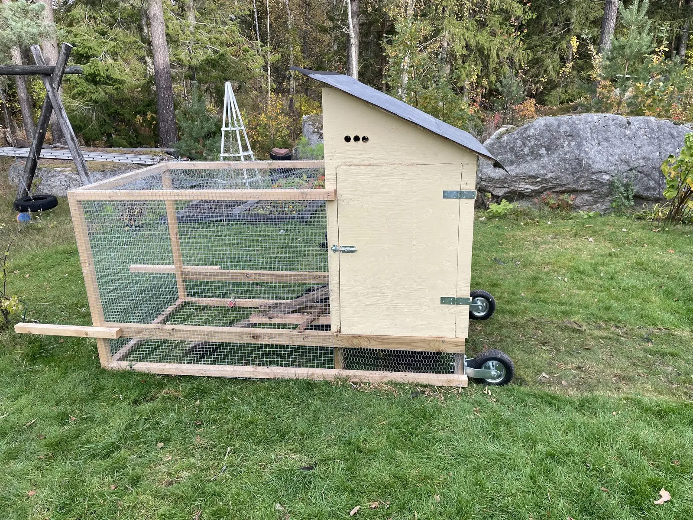
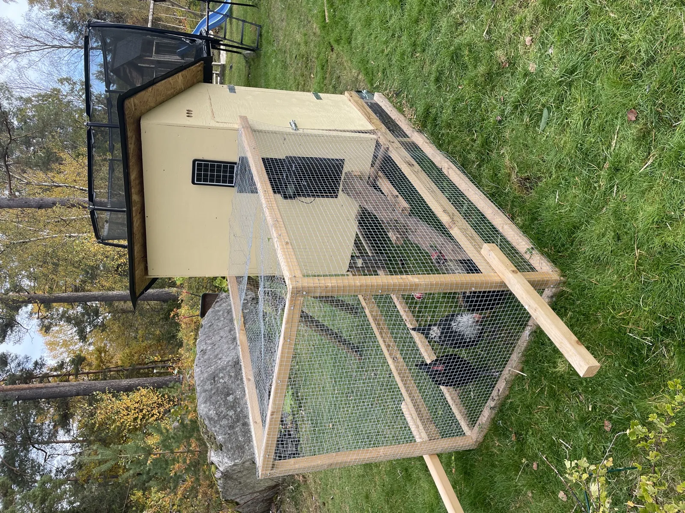
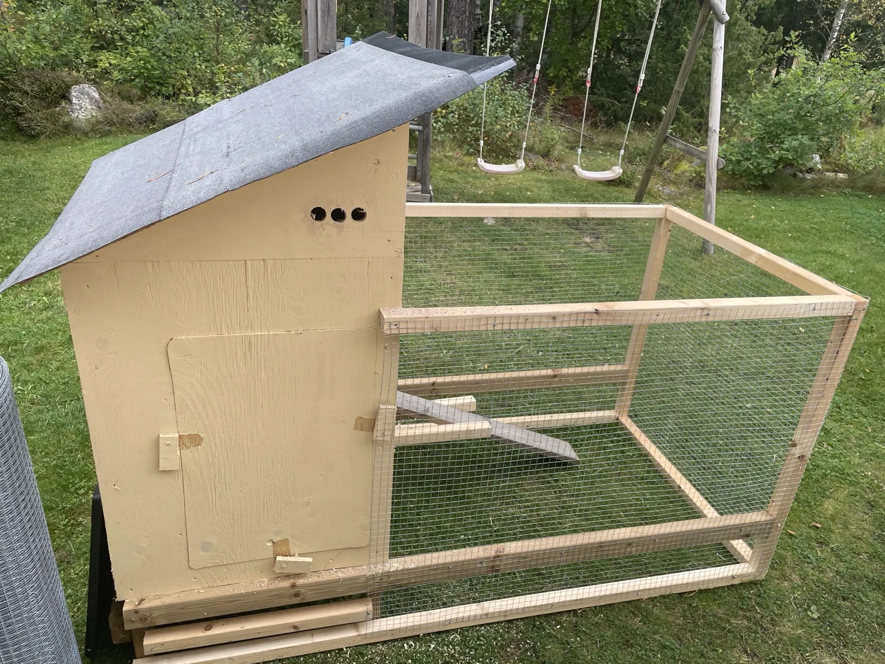
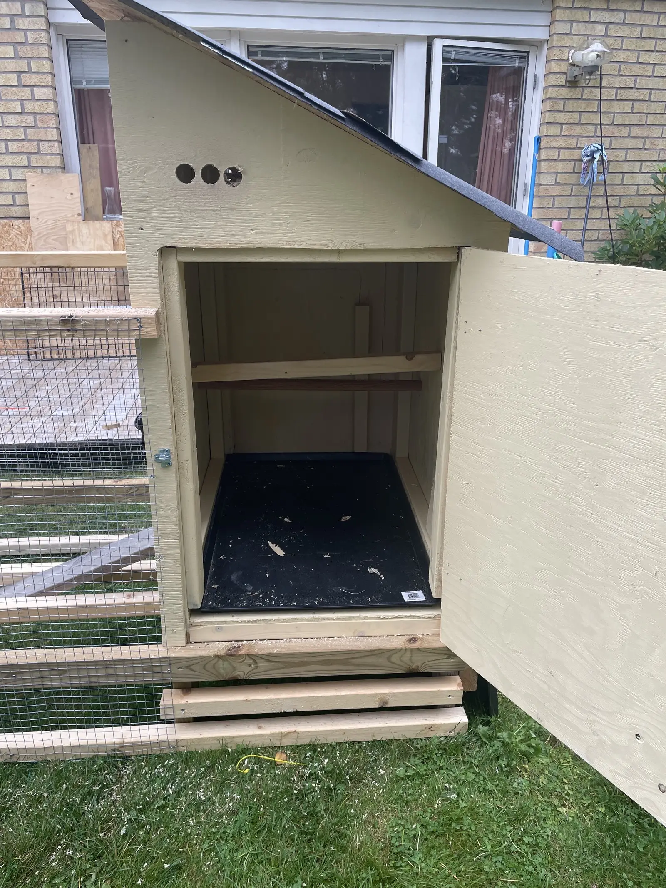
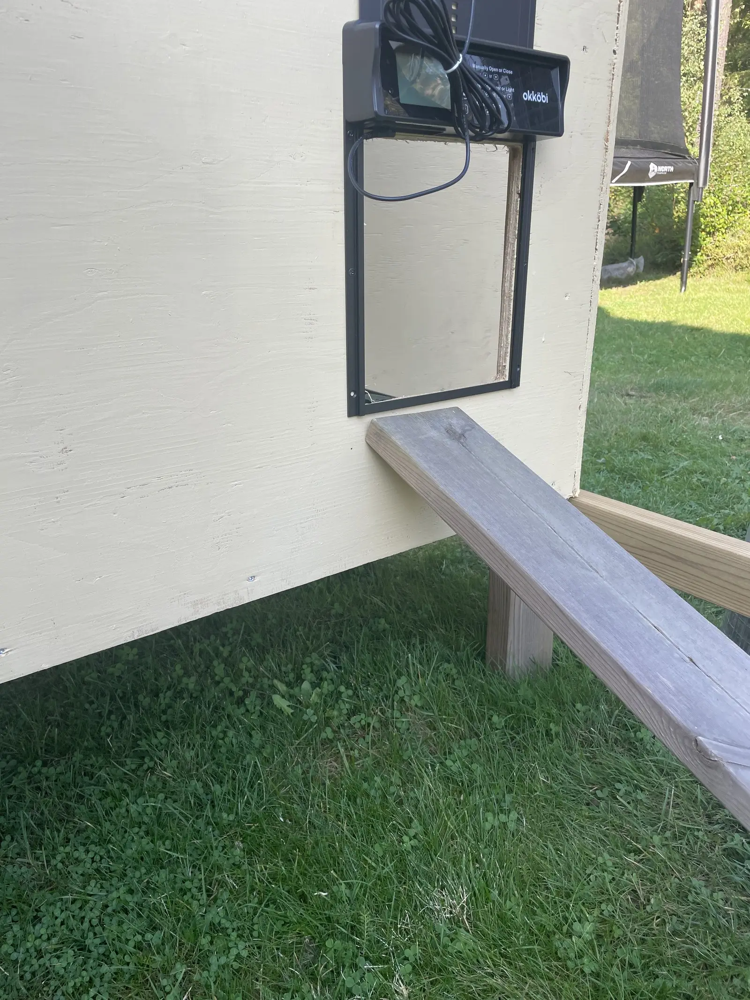
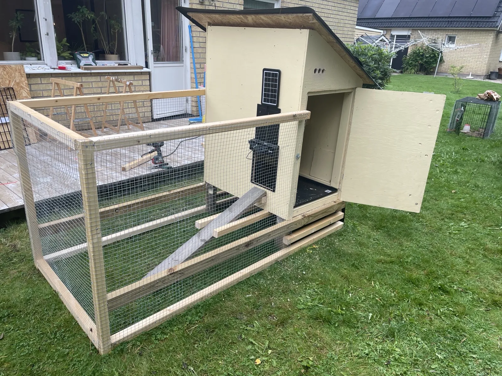
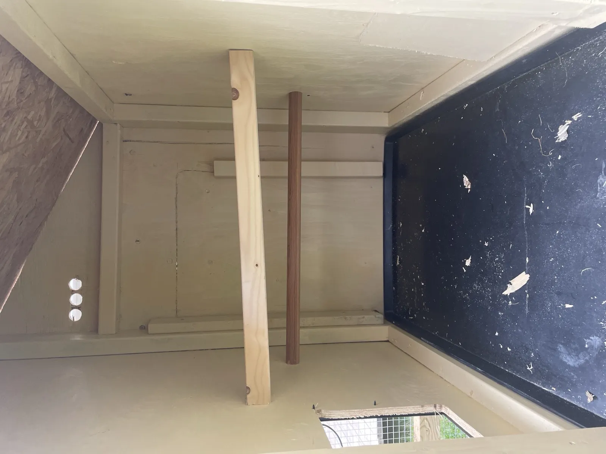

Guide · DIY
Så byggde jag mitt första hönshus
Transparent: Vissa länkar i denna guide ger mig provision. Det ändrar inte vad jag rekommenderar.
Guide · DIY
Transparent: Vissa länkar i denna guide ger mig provision. Det ändrar inte vad jag rekommenderar.
Sommaren 2025 byggde jag mitt första hönshus. Det här är vad jag gjorde, vad jag spenderade, och vad jag skulle ha gjort annorlunda. Du ska se det som en personlig dokumentation, inte som "det rätta sättet att bygga ett hönshus". Det finns säkert tio bättre designer. Den här funkade för mig och fyra kycklingar under en svensk sommar och höst.

Det enkla svaret: jag ville. Det fanns färdiga hönshus för 6 000–13 000 kronor, och jag övervägde det. Men priset kändes högt för vad det var, och jag hade en hel del material liggandes hemma redan.
Det blev jobbigare än jag trodde. Inte för att momenten är svåra, utan för att man hela tiden upptäcker små saker man inte tänkt på. Hönsluckan behöver vara stor nog för att hönsen ska komma in och ut smidigt. Trälimmet behöver torka över natten. Och så vidare.
Men det funkade. Kycklingarna flyttade in och hönshuset står fortfarande på sin plats medan jag väntar på nästa flock.
Designen jag landade på är mobil. Det står på två hjul som aktiveras när man lyfter i handtagen, ungefär som en skottkärra. Enkelt att flytta runt i trädgården för färska gräsbeten. På engelska kallas designen "chicken tractor". Det är en bra lösning om man har gräsmatta att flytta runt på, mindre bra om man bor på berg eller hårt packad jord.

Det är inte stort. Hönsen tillbringade dagarna i den integrerade hönsgården eller på fri lös i trädgården, och bara nätterna i själva sovutrymmet.
Hjulen. Två hjul som gör att hela hönshuset kan lyftas och rullas som en skottkärra. Det viktigaste valet i hela bygget. Jag kunde flytta det varje dag eller var tredje dag beroende på hur gräset såg ut.
Sluttande tak. Bakåt, så regn rinner bort från ingången. Det blev också enklare att göra en stor städdörr.

Stor städdörr på sidan. Hela ena långsidan av sovutrymmet öppnas. Det betyder att jag kan komma åt allt utan att krypa in. Det första jag rekommenderar till någon som ska bygga.

Plastbricka på golvet. En plastbricka jag hade liggandes hemma. När det är dags att städa drar jag ut hela brickan, sköljer av den, och lägger tillbaka.
Automatisk lucköppnare från dag ett. Jag installerade en Okkobi lucköppnare när jag byggde och ställde in den på tider. Den funkade väldigt bra. Kändes tryggt att veta att de var innanför på natten, och alla tog sig alltid in innan den stängdes.

Putsnät kring hönsgården. Jag använde putsnät (svetsat trådnät, 13 mm maska) istället för vanligt hönsnät. Det blev bra. Vanligt hönsnät är inte rävsäkert, en räv kan bita sig igenom det. Putsnät kostar lite mer men det är värt det. En grej jag ska fixa i år är att göra en stor ingång till utedelen av hönsgården, så barnen kan krypa in där om de vill.
Tre runda ventilationshål. Jag borrade tre 30 mm hål under takutsprånget. Det är inte tillräckligt. Höns producerar förvånansvärt mycket fukt. Bättre lösning: en lång smal springa under takutsprånget, hela långsidan, täckt med fint nät.
Solpanelen är för liten. Den lilla solpanelen som följde med lucköppnaren orkar genom svensk sommar och höst, men november–januari började jag oroa mig. Hade jag haft hönsen kvar under vintern hade jag skaffat en större panel.
Vad jag minns. Priserna är från Hornbach och Bauhaus i Örebro, sommaren 2025.
| Material | Antal | Pris |
|---|---|---|
| Regel 45×95 mm, 3 m | ~8 st | ~400 kr |
| Plywood 12 mm, 120×240 cm | 3 skivor | ~600 kr |
| OSB-skiva för tak | 1 skiva | ~200 kr |
| Takpapp | 1 rulle | ~250 kr |
| Putsnät 13 mm, 1 m × 10 m | 1 rulle | ~250 kr |
| Skruv (40 + 70 mm) | 1 ask | ~150 kr |
| Krämgul utomhusfärg, 1 L | 1 burk | ~200 kr |
| Hjul (2 st) | 2 st | ~200 kr |
| Plastbricka (hade hemma) | 1 st | 0 kr |
| Gångjärn, hasp, beslag | div | ~250 kr |
| Diverse (vinklar, spik, lim) | div | ~200 kr |
| Material totalt | ~3 000 kr |

Helg 1: bottenram, hjul, golv. Bygg den nedre ramen som ska bära hela ekipaget. Om grunden inte är rak blir allt skevt sedan. Skruva fast hjulen direkt. Lägg plywood-golv ovanpå.
Helg 2: väggar och tak. Bygg väggarna liggande på golvet och res upp dem en åt gången. Skruva ihop hörnen ordentligt. Lägg på OSB-tak, sedan takpapp.
Helg 3: hönsgården, dörrarna, lucköppnaren. Bygg ramen för hönsgården framåt. Sätt fast hönsnätet. Bygg städdörren och hönsluckan. Montera lucköppnaren.
Halv helg 4: målning och inredning. Måla allt utvändigt. Samma krämgula utomhusfärg som vårt hus. Montera sittpinnar, lägg in plastmatta och strö.

Sittpinnarna inuti: jag har en bredare bräda (5 cm) och en rund pinne (3 cm). Bredare bräda på vintern så hönan kan sitta på sina egna fötter. Rund pinne på sommaren när de vill greppa. Jag lät hönsen välja.
| Post | Kr |
|---|---|
| Material till hönshuset | 2 800 |
| Okkobi lucköppnare | 1 700 |
| Foderautomat | 449 |
| Vattenautomat | 399 |
| Strö (kutterspån) | 100 |
| Totalt | ~5 450 kr |
Mycket av materialet hade jag redan hemma, så den faktiska utgiften var lägre. Inkluderar inte verktyg eller min tid (uppskattningsvis 30–35 timmar).
Jag baserade min slutliga design löst på den klassiska "Catawba chicken ark" från amerikanska BackyardChickens, anpassad för min trädgård.
Räkna med 30–35 timmar för en oerfaren snickare, fördelat på tre eller fyra helger.
Under 15 m² på egen tomt behövs normalt inget bygglov (friggebodsreglerna). Kolla med din kommun.
Reglar 45×95 mm för stommen, plywood 12 mm för väggar. Inte tryckimpregnerat invändigt.
Ja, men kolla att pallarna är märkta HT (heat treated), inte MB (methyl bromide).
I Götaland/Svealand: nej, om hönshuset är dragfritt. I Norrland: överväg dubbla väggar med mineralull.
Mobilt om du har gräsmatta och liten flock. Fast om du har många höns eller ojämn mark.